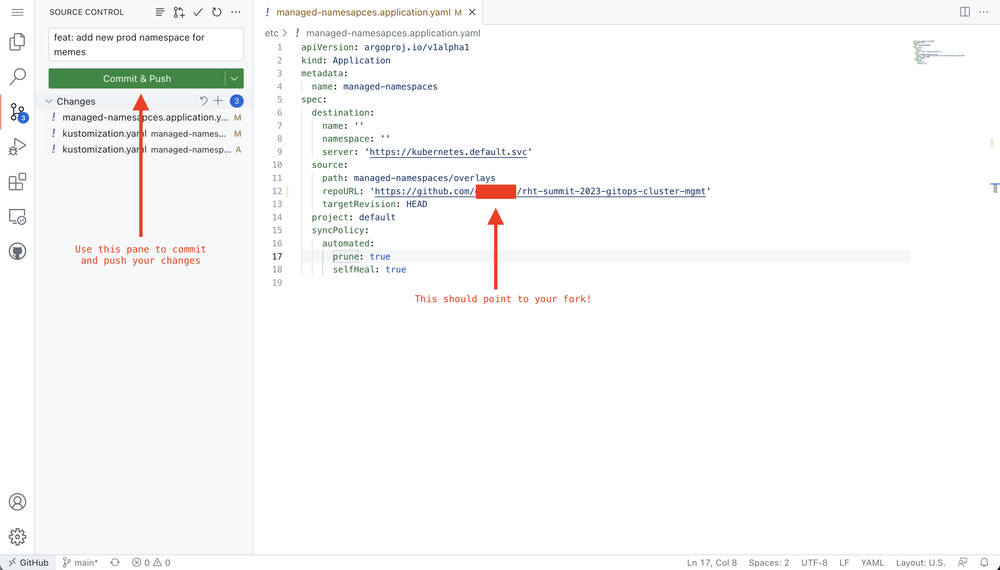

Managing Namespaces using Kustomize and GitOps ⏱️ Estimated Time: 10 Minutes 👨💻 Role: Cluster Administrator Now that you’ve got the basics figured out, you can start managing some Namespaces. Namespaces can be used to provide isolation, and divide resources between different teams within a Kubernetes cluster. For example, two teams could each be given a Namespace within a cluster to deploy their applications. Each Namespace can have a set amount of CPU and memory allocated to it depending on the requirements of the software each team is building and deploying. The members of each team might only have access to their own Namespace and no additional namespaces. In this section, you’ll create two Namespaces based on a shared template. Of course you’ll want each Namespace to have a unique name, and custom ResourceQuotas and LimitRanges depending on the workloads being deployed within them. You’ll learn how to extend and patch YAML files using Kustomize. Argo CD supports both Kustomize and Helm for scenarios where templating YAML is necessary. Another use-case is patching resources based on the target environment. This example from the Kustomize website shows how a Deployment’s replica count can be scaled out depending on the target environment. Examine the Base Resources You’ll be using Kustomize to build out your Namespaces based on a shared template. The repository you made a copy of has included the template files to save some time. Navigate to the managed-namespaces/base folder in your repository. View the contents of the namespace.yaml and resource-quota.yaml files. These are resources that can be applied to a Kubernetes/OpenShift cluster. The argocd.argoproj.io/sync-wave annotations on the YAML resources control the order in which they will be applied by Argo CD. These annotations are related to a concept known as Sync Waves. Utilising Sync Waves is important in this example, since the Namespace needs to exist before other resources can be applied within it. Open the managed-namespaces/base/kustomization.yaml file. This file references the namespace.yaml and resource-quota.yaml files. These files are referred to as bases or the base files to be used by Kustomize. In the next steps you’ll define overlays that extend/modify the base configuration(s). Define a Namespace using Overlays A Namespace is already defined in the managed-namespaces/overlays/project-memes-dev folder. You’ll use this as a template to make a second Namespace: Navigate to the homepage your copy of the GitHub repository. Press the period/dot key to open GitHub’s web-based editor. Create a folder named project-memes-prod inside the managed-namespaces/overlays/ folder. This folder will contain your Namespace configuration. Create a file named kustomization.yaml inside your managed-namespaces/overlays/project-memes-prod folder. Place the following content in managed-namespaces/overlays/project-memes-prod/kustomization.yaml. This will use the base files, but replace the default Namespace value and double the ResourceQuota values: apiVersion: kustomize.config.k8s.io/v1beta1 kind: Kustomization namespace: project-memes-prod bases: - ../../base # Patches are edits to make to a set of one or more targets patches: # This patch targets the Namespace resource and changes the # value of metadata.name to "project-memes-prod" - target: kind: Namespace name: for-replacement patch: |- - op: replace path: /metadata/name value: project-memes-prod # This patch targets the resource quota. It doubles the available # resources compared to the default values - target: kind: ResourceQuota name: resource-quota-memory-cpu patch: |- - op: replace path: /spec/hard/cpu value: 1 - op: replace path: /spec/hard/memory value: 1Gi Edit the kustomization.yaml file in the managed-namespaces/overlays/ folder to reference your new Namespace configuration. It should now look like this: bases: - ./project-memes-dev - ./project-memes-prod The end result will be a new managed-namespaces/overlays/project-memes-prod/kustomization.yaml file, and the existing managed-namespaces/overlays/kustomize.yaml is updated to reference the new project-memes-prod/ folder as shown: Edit the spec.source.repoURL in etc/managed-namespaces.application.yaml to point to your repository’s URL. Use the Source Control section of the GitHub editor to enter a commit message, then press Commit & Push.  You now have two Namespaces ready to be synchronised and managed by Argo CD on your OpenShift cluster. You also have the Application CR required by Argo CD. Argo CD Self-Healing Capabilities Create Applications using the CLI